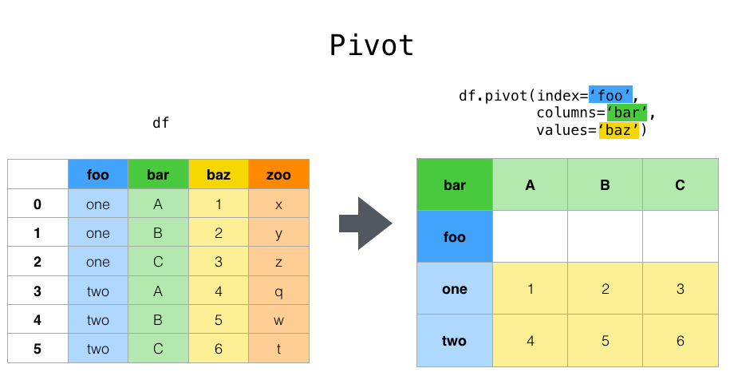

DataFrames Avanzado#
En el apartado anterior hemos visto como interactuar un poco con los DataFrames, cargar, exportar, obtener elementos, particionar un DataFrame y sus atributos y métodos. En este apartado vamos a ver como trabajar un poco a nivel avanzado.
Obtener las características de un DataFrame#
Un DataFrame es una herramienta muy importante dentro del análisis de datos. Permite de forma fácil obtener distintas características e información útil en el proceso de análisis de datos.
Vamos a cargar un fichero csv en un DataFrame para poder analizar sus datos:
import pandas as pd
df = pd.read_csv('./csv/countries.csv')
df
| country_id | country_name | region_id | |
|---|---|---|---|
| 0 | AR | Argentina | 2 |
| 1 | AU | Australia | 3 |
| 2 | BE | Belgium | 1 |
| 3 | BR | Brazil | 2 |
| 4 | CA | Canada | 2 |
| 5 | CH | Switzerland | 1 |
Una vez cargado el DataFrame, podemos pegalre un primer vistazo con head o tail:
df.head()
| country_id | country_name | region_id | |
|---|---|---|---|
| 0 | AR | Argentina | 2 |
| 1 | AU | Australia | 3 |
| 2 | BE | Belgium | 1 |
| 3 | BR | Brazil | 2 |
| 4 | CA | Canada | 2 |
Head nos muestra los n primeros elementos de un DataFrame, y por defecto 5. A su vez, tail muestra los n últimos elementos de un DataFrame, por defecto 5.
df.tail()
| country_id | country_name | region_id | |
|---|---|---|---|
| 1 | AU | Australia | 3 |
| 2 | BE | Belgium | 1 |
| 3 | BR | Brazil | 2 |
| 4 | CA | Canada | 2 |
| 5 | CH | Switzerland | 1 |
Otras funciones interesantes para obtener información de un DataFrame son:
info()describe()
La primera nos muestra un resumen de los datos que contiene el DataFrame, cuantas filas tiene, columnas, valores nulos, etc.
df.info()
<class 'pandas.core.frame.DataFrame'>
RangeIndex: 6 entries, 0 to 5
Data columns (total 3 columns):
# Column Non-Null Count Dtype
--- ------ -------------- -----
0 country_id 6 non-null object
1 country_name 6 non-null object
2 region_id 6 non-null int64
dtypes: int64(1), object(2)
memory usage: 276.0+ bytes
La segunda, información estadística del DataFrame:
df.describe()
| region_id | |
|---|---|
| count | 6.000000 |
| mean | 1.833333 |
| std | 0.752773 |
| min | 1.000000 |
| 25% | 1.250000 |
| 50% | 2.000000 |
| 75% | 2.000000 |
| max | 3.000000 |
A su vez, podemos utilizar el parámetro all para obtener información más detallada del DataFrame:
df.describe(include="all")
| country_id | country_name | region_id | |
|---|---|---|---|
| count | 6 | 6 | 6.000000 |
| unique | 6 | 6 | NaN |
| top | AR | Argentina | NaN |
| freq | 1 | 1 | NaN |
| mean | NaN | NaN | 1.833333 |
| std | NaN | NaN | 0.752773 |
| min | NaN | NaN | 1.000000 |
| 25% | NaN | NaN | 1.250000 |
| 50% | NaN | NaN | 2.000000 |
| 75% | NaN | NaN | 2.000000 |
| max | NaN | NaN | 3.000000 |
Remodelar un DataFrame#
La manipulación de DataFrames es una parte fundamental del análisis de datos en Python. A menudo, necesitamos remodelar nuestros datos para adaptarlos a nuestras necesidades de análisis. En este apartado, exploraremos cuatro funciones clave de remodelación de DataFrames en la biblioteca pandas: pivot, stack, unstack y melt. Estas funciones son esenciales para transformar datos, cambiar su estructura y realizar tareas de agregación. A lo largo de esta documentación, aprenderás cómo usar estas funciones con ejemplos prácticos y casos de uso comunes. Para ello, vamos a partir del siguiente DataFrame:
data = {
'Fecha': ['2023-01-01', '2023-01-01', '2023-01-02', '2023-01-02'],
'Categoria': ['A', 'B', 'A', 'B'],
'Tipo': ['X', 'Y', 'X', 'Y'],
'Valor_Cantidad': [10, 15, 8, 12],
'Valor_Precio': [5, 6, 7, 9]
}
df = pd.DataFrame(data)
df
| Fecha | Categoria | Tipo | Valor_Cantidad | Valor_Precio | |
|---|---|---|---|---|---|
| 0 | 2023-01-01 | A | X | 10 | 5 |
| 1 | 2023-01-01 | B | Y | 15 | 6 |
| 2 | 2023-01-02 | A | X | 8 | 7 |
| 3 | 2023-01-02 | B | Y | 12 | 9 |
Pivot#
La función pivot permite reorganizar un DataFrame para cambiar su estructura de datos de largo a ancho. Puede ser especialmente útil cuando se desea comparar categorías o variables a través de columnas.

DataFrame.pivot(*, columns, index=_NoDefault.no_default, values=_NoDefault.no_default)
pivot_df = df.pivot(index='Fecha', columns='Categoria', values='Valor_Cantidad')
pivot_df
| Categoria | A | B |
|---|---|---|
| Fecha | ||
| 2023-01-01 | 10 | 15 |
| 2023-01-02 | 8 | 12 |
La función pivot puede producir el error “ValueError: Index contains duplicate entries, cannot reshape” cuando intentas aplicar la función en un DataFrame y el índice especificado (generalmente en la sección index del método pivot) contiene entradas duplicadas. Pandas no permite usar pivot si hay duplicados en las combinaciones de índice y columnas. Para resolver este error, puedes considerar las siguientes opciones:
Eliminar los duplicados: La forma más sencilla de resolver el problema es eliminar las filas duplicadas antes de aplicar pivot. Puedes utilizar el método drop_duplicates() para hacerlo.
Agregar los valores duplicados: Si tienes valores duplicados que deseas conservar, debes realizar una operación de agregación antes de aplicar pivot. Puedes usar el método groupby para agrupar y luego aplicar una función de agregación, como sum o mean, para combinar los valores duplicados.
Stack y Unstack#
Las funciones stack y unstack permiten cambiar entre estructuras de datos anchas y largas.
Stack convierte columnas en un índice múltiple:
DataFrame.stack(level=-1, dropna=_NoDefault.no_default, sort=_NoDefault.no_default, future_stack=False
stacked_df = df.set_index(['Fecha', 'Categoria', 'Tipo']).stack()
stacked_df
Fecha Categoria Tipo
2023-01-01 A X Valor_Cantidad 10
Valor_Precio 5
B Y Valor_Cantidad 15
Valor_Precio 6
2023-01-02 A X Valor_Cantidad 8
Valor_Precio 7
B Y Valor_Cantidad 12
Valor_Precio 9
dtype: int64
Por su parte unstack convierte un índice múltiple en columnas.
DataFrame.unstack(level=-1, fill_value=None, sort=True)
unstacked_df = stacked_df.unstack(level=1)
unstacked_df
| Categoria | A | B | ||
|---|---|---|---|---|
| Fecha | Tipo | |||
| 2023-01-01 | X | Valor_Cantidad | 10.0 | NaN |
| Valor_Precio | 5.0 | NaN | ||
| Y | Valor_Cantidad | NaN | 15.0 | |
| Valor_Precio | NaN | 6.0 | ||
| 2023-01-02 | X | Valor_Cantidad | 8.0 | NaN |
| Valor_Precio | 7.0 | NaN | ||
| Y | Valor_Cantidad | NaN | 12.0 | |
| Valor_Precio | NaN | 9.0 |
Melt#
La función melt se utiliza para cambiar un DataFrame de ancho a largo. Convierte múltiples columnas en dos columnas: una que contiene las variables y otra que contiene los valores correspondientes.
pandas.melt(frame, id_vars=None, value_vars=None, var_name=None, value_name='value', col_level=None, ignore_index=True)
melted_df = df.melt(id_vars=['Fecha', 'Categoria', 'Tipo'], value_vars=['Valor_Cantidad', 'Valor_Precio'], var_name='Variable', value_name='Valor')
melted_df
| Fecha | Categoria | Tipo | Variable | Valor | |
|---|---|---|---|---|---|
| 0 | 2023-01-01 | A | X | Valor_Cantidad | 10 |
| 1 | 2023-01-01 | B | Y | Valor_Cantidad | 15 |
| 2 | 2023-01-02 | A | X | Valor_Cantidad | 8 |
| 3 | 2023-01-02 | B | Y | Valor_Cantidad | 12 |
| 4 | 2023-01-01 | A | X | Valor_Precio | 5 |
| 5 | 2023-01-01 | B | Y | Valor_Precio | 6 |
| 6 | 2023-01-02 | A | X | Valor_Precio | 7 |
| 7 | 2023-01-02 | B | Y | Valor_Precio | 9 |
© 2008–2022, AQR Capital Management, LLC, Lambda Foundry, Inc. and PyData Development Team Licensed under the 3-clause BSD License. https://pandas.pydata.org/pandas-docs/version/1.5.0/user_guide/reshaping.html